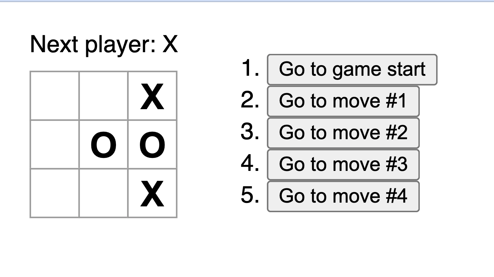
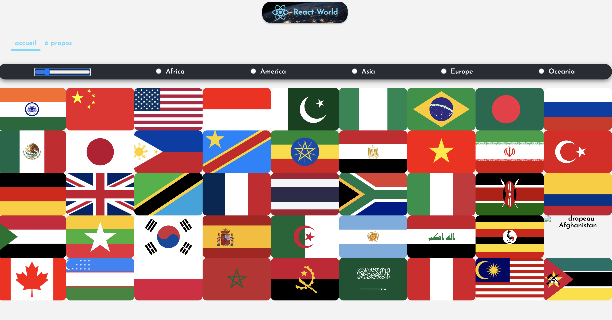
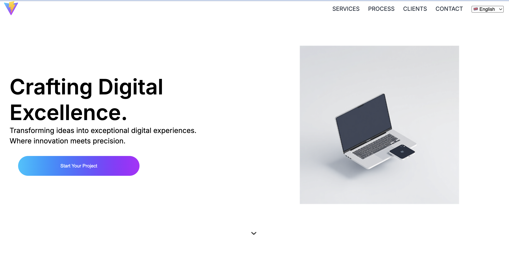
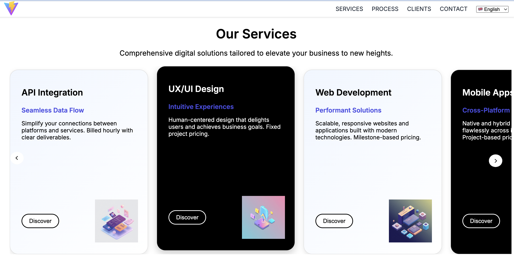
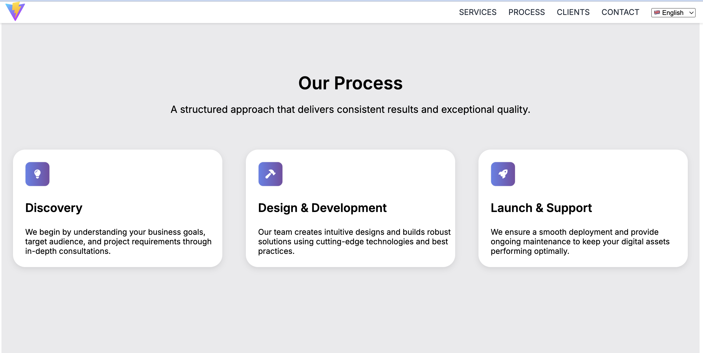

Développement from scratch de la landing page officielle de l'entreprise — responsive, multilingue et déployée sur Firebase.
J'ai effectué mon stage au sein de la structure d'Adama Diop, développeur indépendant spécialisé dans le développement mobile. Il intervient en tant que prestataire pour deux entreprises clientes dans le cadre de missions de développement mobile. C'est dans ce contexte qu'il m'a confié le développement du site web Gollal, vitrine de son activité freelance.
Auto-entrepreneur (micro-entreprise)
Clichy-sous-Bois, 93390
1 personne (indépendant)
Développement mobile — prestataire pour 2 entreprises clientes
Services informatiques / développement logiciel
Développement du site web Gollal (landing page officielle)
Avant de me lancer sur le projet Gollal, j'ai pris le temps d'apprendre React de façon autonome en réalisant deux petits projets pratiques. Ces deux applications ont été hébergées sur GitHub Pages.
Premier projet React pour maîtriser les bases : composants, useState, gestion des événements et logique de jeu (détection victoire, tour par tour).

Voir la démo →Deuxième projet pour consolider la consommation d'API REST en React : fetch de données, affichage dynamique, gestion des états de chargement et routing avec React Router.

Voir la démo →Système de changement de langue via un useState React. Les traductions étaient d'abord stockées dans des fichiers JSON locaux, puis migrées vers Firebase Remote Config pour permettre des mises à jour sans redéploiement.
Menu burger pour mobile, ancrage interne fluide entre les sections, navigation optimisée pour tous les formats d'écran (mobile, tablette, desktop).
Respect des bonnes pratiques d'accessibilité web : balises sémantiques, contrastes, attributs ARIA et navigation clavier.
Intégration fidèle de la charte graphique de l'entreprise : couleurs, typographies, espacements et composants visuels cohérents.
Migration des traductions vers Firebase Remote Config pour permettre à l'équipe de modifier le contenu multilingue sans toucher au code source.
Travail en équipe avec méthode Scrum, suivi des tâches sur Jira, versionnement sur GitLab et participation aux réunions de sprint.


